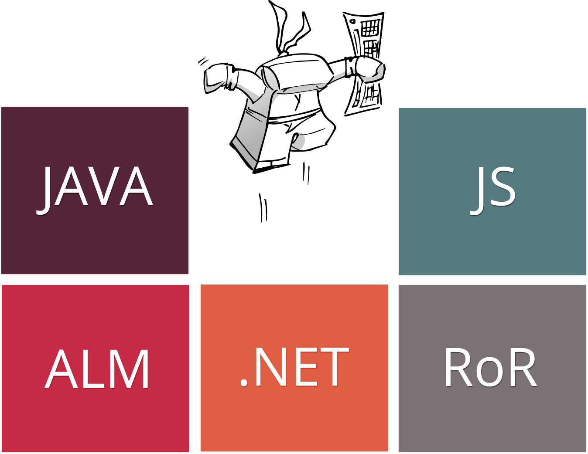
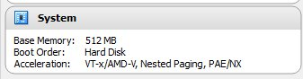
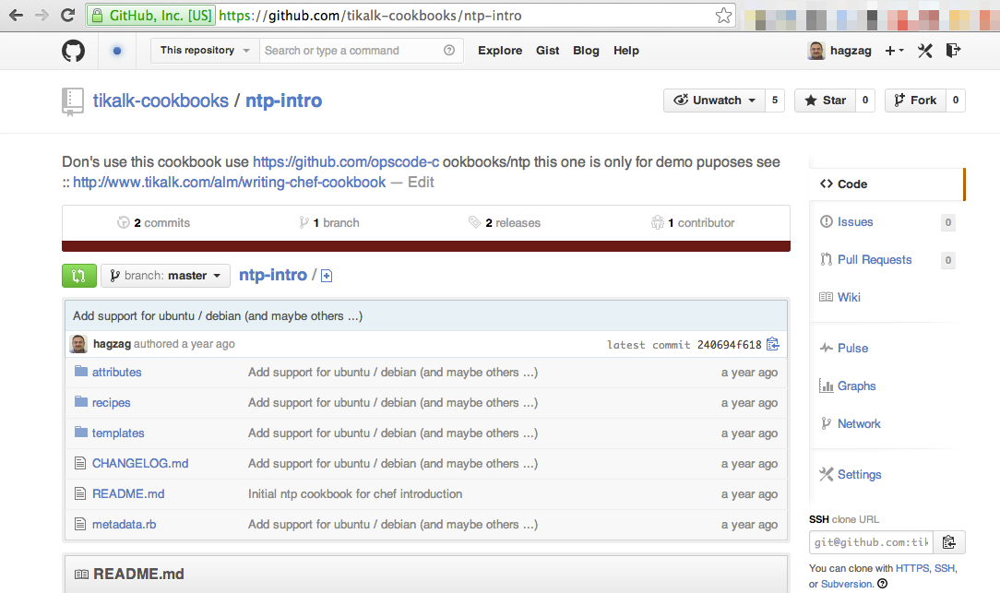
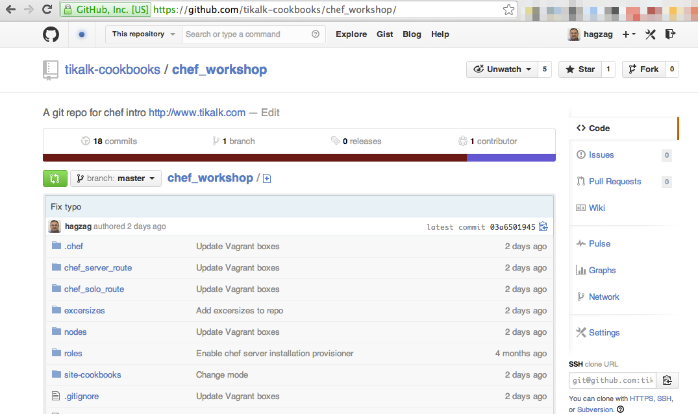
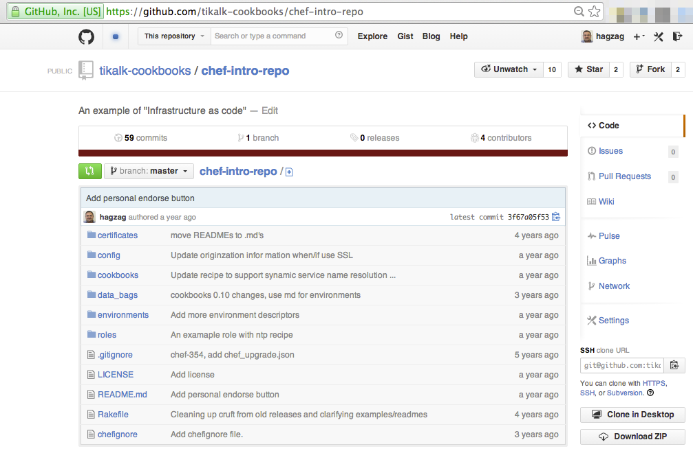
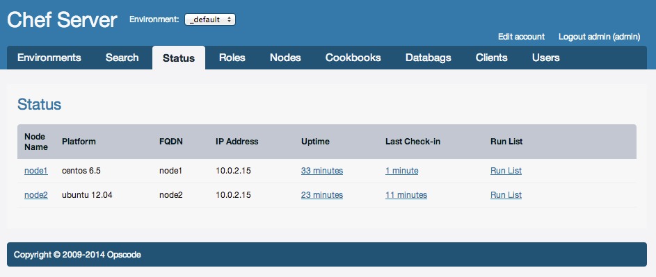

Chef Introduction
A practical approach to chef (Using Vagrant)
Composed by Haggai Philip Zagury / @hagzag
Agenda Day 1
- Introduction to Opscode Chef
- Write an innocent cookbook - hands on
- Improve the innocent cookbook - hands on
- Introduction to Vagrant
- Use Vagrant & Chef - hands on
- Summary day 1
"What we have to learn to do, we learn by doing." - Aristotle, Greek philosopher
Whoami?
Haggai Philip Zagury
- Working as a consultant, in the DevOps & ALM team @ Tikal Knowledge.
- Always on the search for Open Source driven solutions, I
Like to Design, Develop, Document, Train & Implement.
- Working on Continuous Integration, Delivery in the cloud
with Jenkins, Opscode Chef, AWS, Open Stack, VMware & many
more fine tools & frameworks.
I've designed & implemented build (CI) systems for many companies, and designed solutions from the development and into production.
Our Expertise
Today we are SURE that we made the right decision, choosing Tikal
Guy Ben-Porat, Development Manager “ExLibris”
Tikal By Numbers
Actions speak louder than words
Tikal's Motto
Chef Introduction
http://prezi.com/8zwcr5df9eno/chef-intro-chef-server-workflow
Lets go through this prezi together
Recap
We know what !
- Chef is - and what it solves
- Chef server / solo / knife (WS)
are
Let's write a simple cookbook ...
Exercise - Hands On
Writing your first cookbook
Exercise #2: tag 0.1.1
Exercise #3: test ntp cookbook with vagrant
Prerequisites
- A Laptop ... :)
- Internet Access (download rpms etc)
- Some scripting background (Shell/PS - Ruby is a plus)
- Git [git bash for windows*]
- Github account [private / public key]
- VirtualBox
- Chef (ruby)
*git bash is also used in order to ssh
into a vagrant image on windows
Exercise #1
Write a cookbook
The Plan
- Install an ntp [network time protocol]
server.
- Make all the servers in my infrastructure
use the same server.
- Write it once, reuse on all servers
Install Chef & Ruby
Omnibus
installer will "figure out" your OS and install it
In
addition to an embedded version of chef
On *nix / MacOSX
curl -L https://www.opscode.com/chef/install.sh | sudo bash
/opt/opscode/...On Windows [Download link]
https://opscode-omnibus-packages.s3.amazonaws.com/windows/2008r2/x86_64/chef-client-11.8.0-1.windows.msi
c:\opscodeConfigure knife ...
We don't really need knife (at this stage), so we will just provide it with the defaults
Execute & Accept all defaults:
knife configure
WARNING: No knife configuration file found
Where should I put the config file? [/home/hagzag/.chef/knife.rb] y
Please enter the chef server URL: [https://:443]
Please enter an existing username or clientname for the API: [hagzag]
Please enter the validation clientname: [chef-validator]
Please enter the location of the validation key: [/etc/chef-server/chef-validator.pem]
...
*****
Configuration file written to /home/hagzag/.chef/knife.rb
Create a cookbook skeleton
knife cookbook create ntp -o .We get:
attributes/
definitions/
files/
libraries/
metadata.rb
providers/
README.rdoc
recipes/
resources/
templates/Shortcut => Get from git:
git clone git@github.com:tikalk-cookbooks/ntp-intro.git
git checkout -b 0.1.0Create a recipe [step 1/3]
vim cookbooks/ntp/recipes/default.rbpackage "ntp" do
action [:install]
end yum install ntpCreate a recipe [Step 2/3]
template "/etc/ntp.conf" do
source "ntp.conf.erb"
variables( :ntp_server => "time.nist.gov" )
notifies :restart, "service[ntpd]"
endvim cookbooks/ntp/templates/default/ntp.conf.erbrestrict default kod nomodify notrap nopeer noquery
restrict -6 default kod nomodify notrap nopeer noquery
restrict 127.0.0.1
restrict -6 ::1
server <%= @ntp_server %>
server 127.127.1.0 # local clock
driftfile /var/lib/ntp/drift
keys /etc/ntp/keyshttps://raw.github.com/tikalk-cookbooks/ntp-intro/0.1.0/templates/default/ntp.conf.erb
Similar to manually editing the /etc/ntp.conf
Create a recipe [Step 3/3]
service "ntpd" do
action [:enable,:start]
endchkconfig ntp onEx01 Complete
What have we here ?
- Install ntp
- Configure the service via template file
- Enable and start the service
If yours differs - compare with:
https://github.com/tikalk-cookbooks/ntp-intro
use tag 0.1.0
The problem
- The service name in ubuntu is ntp and ntpd on centos !
- We are not very flexible with ntp servers
- What if I want more than 1
- What is I have different servers in different time zones ?
Exercise #2
Sharpen your knives => Improve the cookbook
Add an attributes file
vim ntp/attributes/default.rbUse a case statement to differentiate between platforms
case x
when 1,2,3
puts "1, 2, or 3"
when 10
puts "10"
else
puts "Some other number"
endImproving your recipe [Step 1/3]
case platform
when "redhat","centos","fedora","scientific"
default[:ntp][:service] = "ntpd"
when "ubuntu","debian"
default[:ntp][:service] = "ntp"
else
default[:ntp][:service] = "ntpd"
end
So now according to the
node['platform'] which chef "knows" during the chef run the service name will be
defined accordingly !
+ provide a default of
"ntpd" !
[1of3] on
github tag 0.1.1
Add an array of ntp servers
In order to support more than 1 server
In this example add:
0.pool.ntp.org, 1.pool.ntp.org, 2.pool.ntp.org, 3.pool.ntp.orgChange our template file to support 4 ntp servers ...
We have 4 servers in out attributes file (but we might have 5 tomorrow ...)
0.pool.ntp.org, 1.pool.ntp.org, 2.pool.ntp.org, 3.pool.ntp.orgOur template file will is an erb file + loop over the servers array using the .each method
Improving your recipe [Step 2/3]
default[:ntp][:servers] = ["0.pool.ntp.org", "1.pool.ntp.org", "2.pool.ntp.org", "3.pool.ntp.org"]# Generated by Chef for <%= node[:fqdn] %>
# node[:fqdn] = ohai data collected on node !
# Local modifications will be overwritten.
restrict -6 ::1
#server <%= @ntp_server %>
<% node[:ntp][:servers].each do |ntpsrv| -%>
server <%= ntpsrv %> iburst
restrict <%= ntpsrv %> nomodify notrap noquery
<% end -%>Side note:
See how we use node attributes
node[:fqdn]
# Generated by Chef for <%= node[:fqdn] %>
# node[:fqdn] = ohai data collected on node !
# Local modifications will be overwritten.Improving your recipe [Step 3/3]
Re-arrange recipe
package "ntp" do
action [:install]
endThe package name is similar on all platforms
so there is no real change here ...
[3of3] on github tag 0.1.1
Improving your recipe [Step 3/3]
service node[:ntp][:service] do
service_name node[:ntp][:service]
action [:enable,:start,:restart]
end
Service declaration - the service name and it's implied location
/etc/init.d/ntp or /etc/init.d/ntpd
based on: service =>node[:ntp][:service]
[3of3] on
github tag 0.1.1
Improving your recipe [Step 3/3]
template "/etc/ntp.conf" do
source "ntp.conf.erb"
owner "root"
group "root"
mode 0644
notifies :restart, resources(:service => node[:ntp][:service])
end
This part is also the same as before just with a shift in it's location
[3of3] on
github tag 0.1.1
Improving your recipe [Step 3/3]
package "ntp" do
action [:install]
end
service node[:ntp][:service] do
service_name node[:ntp][:service]
action [:enable,:start,:restart]
end
template "/etc/ntp.conf" do
source "ntp.conf.erb"
owner "root"
group "root"
mode 0644
notifies :restart, resources(:service => node[:ntp][:service])
end
The service name comes
before the template which notifies
:service =>node[:ntp][:service]
[3of3] on
github tag 0.1.1
Ex02 Complete
What have we here ?
- Install ntp on ubutnu + centos
- Configure the service via template file
- Support 1...n ntp servers
- Enable and start the service
If yours differs - compare with:
https://github.com/tikalk-cookbooks/ntp-intro
use tag 0.1.1
So we have our first cookbook
now what ?
We want to test this cookbook & we need a server to test this on right ?
A good place to introduce
Vagrant
and create aVM
to test this cookbook ...Stage #1 Complete
P.S
Please don't use this cookbook in production ;)
Use opscode's @ https://github.com/opscode-cookbooks/ntp
This one is just for play ;)
Introduction to
VAGRANT
What is a Virtual Machine (Box) ?
- A software implementation of physical hardware
- CPU, RAM, Block Devices, Drivers etc
- An isolated piece of software providing OS & HW
- A VM's Host is the Operating system / Hypervisor which instances / guest machines reside on.
UnderstandIng Vagrant
Vagrant provides easy to configure, reproducible, and portable work environments built on top of industry-standard technology and controlled by a single consistent work-flow to help maximize the productivity and flexibility of you and your team.
To achieve its magic, Vagrant stands on the shoulders of giants. Machines are provisioned on top of VirtualBox , VMware , AWS, or any other provider. Then, industry-standard provisioning tools such as shell scripts , Chef , or Puppet, can be used to automatically install and configure software on the machine.
The workflow > experience
- Develop - IDE / Editor / Browser etc
- Define third party dependencies / services etc
- mysql / pgsql
- apache / nginx
- tomcat / rails
- Start an instance with your entire stack
- You get:
- Isolated environment
- Self controlled [ fully controlled ]
- Reproducible / Repeatable
- Sharable [ ovf export / vagrant package ]
- Similar to production
Vagrant Commands
- vagrant up - start
- vagrant ssh - connect
- vagrant suspend - shutdown (doesn't delete)
- vagrant resume - startup
- vagrant halt - stop [ non - clean shutdown ... ]
- vagrant destroy - delete the machine
- vagrant reload - reload the machine
- vagrant provision - run the provisioner
Installing Vagrant
- Install VirtualBox https://www.virtualbox.org/wiki/Downloads
- Install Vagrant http://downloads.vagrantup.com/
- Optional: Setup and AWS account
Off-line copy is available with workshop materials
Adding Vagrant to your project
cd ~/My_Cool_Project
vagrant init My_Cool_Project http://shonky.info/centos64.boxSo now you have a skeleton [ with good remarks ] of a Vagrantfile
The Vagrantfile [ compute ]
Define a box & box url
config.vm.box = "CentOS 6.4 x86_64"
config.vm.box_url = "http://bit.ly/1aNaifu"config.vm.network "private_network", ip: "192.168.56.80"config.vm.network "public_network # will get DHCP from your LANNAME = "MyAwesomeVM"config.vm.hostname = "#{NAME}"The Vagrantfile [ Automate ]
Define your provisioner: shell/chef/puppet
shell example:
config.vm.provision :shell, :path => File.expand_path("../bootstrap.sh", __FILE__)config.vm.provision :chef_solo do |chef|
chef.cookbooks_path = ["cookbooks", "site-cookbooks"]
chef.roles_path = ["roles"]
chef.log_level = ENV['CHEF_LOG'] ? ENV['CHEF_LOG'].to_sym : :info
chef.add_role "web"
# chef.add_recipe "nginx" => marked out but you can also add recipes ...
endMore about provisioner(s) here
The Vagrantfile [ provider ]
Define your provider: virtualbox, aws, vmware fusion
- Defaults to Virtualbox
- Fusion plugin costs money
Customize you virtualbox machine:
config.vm.provider :virtualbox do |vb|
# Don't boot with headless mode
# vb.gui = true
vb.customize [ "modifyvm", :id, "--memory", "512"]
vb.name = "#{NAME}"
endAdd some "juice" to your machine [if you need it]
More about providers here
Important note:
Vagrant has a BEST EFFORT approach
First try virtual box unless --provider is specified
if --provider=aws ignore all vb customizations (or networking for that matter)
Look for a provisioner Chef / Shell / Salt / Other ..., more then one great !
config.vm.provision "shell",
inline: "[[ `which chef-solo` ]] || curl -L https://www.opscode.com/chef/install.sh | sudo bash"
config.vm.provision :chef_solo do |chef|
chef.cookbooks_path = ["cookbooks", "site-cookbooks"]
chef.roles_path = ["roles"]
chef.log_level = ENV['CHEF_LOG'] ? ENV['CHEF_LOG'].to_sym : :info
chef.add_role "web"
endThe Vagrantfile [ provider ]
Work in the cloud - AWS example:
config.vm.provider :aws do |aws, override|
# Add aws tags
aws.tags = {
'vagrant' => 'true',
'environment' => 'devenv'
}
aws.access_key_id = ENV['AWS_ACCESS_KEY']
aws.secret_access_key = ENV['AWS_SECRET_KEY']
aws.keypair_name = "A_VAGRANT_KEYPAIR"
aws.security_groups = [ "MySecurotyGroupWithSSHOpen" ]
aws.region = "us-west-2"
aws.ami = "ami-myami"
endvagrant up --provider=awsVagrant can be extended via plugins
For example:
Easy as:
vagrant plugin install [plugin-name] Exercise #3:
Testing our cookbook with Vagrant
Using:
- Chef solo [ version 11.8.2 ] - installed in ex01
- VirtualBox [ version 4.3.6 ] - now
- Vagrant [ version 1.4.3 ] - now
- Ntp cookbook from Exercise#2
Installing VirtualBox
Use installer suitable for your platform from:
Virtualbox site
Offline copy is available with workshop materials
Installing Vagrant
- Install VirtualBox https://www.virtualbox.org/wiki/Downloads
- Install Vagrant http://downloads.vagrantup.com/
- Optional: Setup and AWS account
Offline copy is available with workshop materials
InstallIng Vagrant
No extra configuration needed (at this point ...)
Create a Vagrant File
cd path/to/project
vagrant initYou should get a clean vagrant file
Configure provider
- Define the box you want to work with:
- Name
- Url
- Customize the Vagrant box
- GUI yes/no (defaults to no)
- RAM
- CPU(s)
Defining the box
Vagrant.configure(VAGRANTFILE_API_VERSION) do |config|
config.vm.box = "CentOS 6.5 x86_64"
config.vm.box_url = "http://bit.ly/1aNaifu"In order to save time I have provided an offline copy of this box:
Add it by excuting the command Vagrant box add like so:
vagrant box add "CentOS 6.5 x86_64" file:///path/to/vbox/image-bundle.boxThis command will add to your home folder ~/.vagrnat/boxes/CentOS 6.5 x86_64
vagrant box add "centos65-x86_65" /Volumes/TOSHIBADISK/Vagrant-Boxes/centos65-x86_64-20131205.box
Downloading box from URL: file:/Volumes/TOSHIBADISK/Vagrant-Boxes/centos65-x86_64-20131205.box
Extracting box...te: 245M/s, Estimated time remaining: --:--:--)
Successfully added box 'centos65-x86_65' with provider 'virtualbox'!Lets test it
cd path/to/project
vagrant up
Bringing machine 'default' up with 'virtualbox' provider...
[default] Importing base box 'CentOS 6.5 x86_64'...
[default] Matching MAC address for NAT networking...
[default] Setting the name of the VM...
[default] Clearing any previously set forwarded ports...
[default] Clearing any previously set network interfaces...
[default] Preparing network interfaces based on configuration...
[default] Forwarding ports...
[default] -- 22 => 2222 (adapter 1)
[default] Booting VM...
[default] Waiting for machine to boot. This may take a few minutes...
DL is deprecated, please use Fiddle
[default] Machine booted and ready!
[default] Mounting shared folders...
[default] -- /vagrantOpen Virtual box Manager ans see you have a box there, Then desory it ...
vagrant destroy -f-f used for force ...
Customize Virtual Machine
config.vm.provider "virtualbox" do |vb|
vb.gui = true
vb.customize ["modifyvm", :id, "--memory", 512]
vb.customize ["modifyvm", :id, "--ioapic", "on", "--cpus", 1]
endNote the vb.gui = true option here,
in this case I would like the Virtualbox GUI to startup !
Validate Customization
Is now
Install Chef client
We cloud choose a vagran box with chef client installed ..., but where is the fun in that ?
config.vm.provision "shell",
inline: "[[ `which chef-solo` ]] || curl -L https://www.opscode.com/chef/install.sh | sudo bash"Use chef to install our ntp cookbook from ex02
config.vm.provision :chef_solo do |chef|
chef.cookbooks_path = ["cookbooks" ]
chef.add_recipe "ntp"
endsetup the cookbooks directory
Copy the ntp cookbook in to a directory called cookbooks
mkdir ./cookbooks
cp -R ntp cookbooksExecute the vagrant provision
$ vagrant provision
[default] Running provisioner: shell...
[default] Running: inline script
[default] Running provisioner: chef_solo...
Generating chef JSON and uploading...
Vagrant is trigerring chef-solo ...
Running chef-solo...
[] INFO: Forking chef instance to converge...
[] INFO: *** Chef 11.10.0 ***
[] INFO: Chef-client pid: 1655
[] INFO: Setting the run_list to ["recipe[ntp]"] from JSON
[] INFO: Run List is [recipe[ntp]]
[] INFO: Run List expands to [ntp]
[] INFO: Starting Chef Run for vagrant-centos65
[] INFO: Running start handlers
[] INFO: Start handlers complete.end of "compliation - begining of converge (execution)"
Chef converge
[] INFO: package[ntp] installing ntp-4.2.6p5-1.el6.centos from base repository
[] INFO: service[ntpd] enabled
[] INFO: service[ntpd] started
[] INFO: service[ntpd] restarted
[] INFO: template[/etc/ntp.conf] backed up to /var/chef/backup/etc/ntp.conf.chef-20130913144203.354529
[] INFO: template[/etc/ntp.conf] updated file contents/etc/ntp.conf
[] INFO: template[/etc/ntp.conf] sending restart actionto service[ntpd] (delayed)
[] INFO: service[ntpd] restarted
[] INFO: Chef Run complete in 87.127895456 seconds
[] INFO: Running report handlers
[] INFO: Report handlers complete
- We could see it installed the ntp rpm
- Enabled the service
- Started the service
Check yourself
Connect to the machine
vagrant sshIs the rpm installed ?
rpm -qa | grep ntp
[vagrant@vagrant-centos65 ~]$ rpm -qa | grep ntp
ntpdate-4.2.6p5-1.el6.centos.x86_64
ntp-4.2.6p5-1.el6.centos.x86_64
Examine /etc/ntp.conf
[vagrant@vagrant-centos65 ~]$ cat /etc/ntp.conf
# Generated by Chef for
# node[:fqdn] = ohai data collected on node !
# Local modifications will be overwritten.
restrict -6 ::1
#server
server 0.pool.ntp.org iburst
restrict 0.pool.ntp.org nomodify notrap noquery
server 1.pool.ntp.org iburst
restrict 1.pool.ntp.org nomodify notrap noquery
server 2.pool.ntp.org iburst
restrict 2.pool.ntp.org nomodify notrap noquery
server 3.pool.ntp.org iburst
restrict 3.pool.ntp.org nomodify notrap noquery
restrict default kod nomodify notrap nopeer noquery
restrict -6 default kod nomodify notrap nopeer noquery
restrict 127.0.0.1
server 127.127.1.0 # local clock
driftfile /var/lib/ntp/drift
keys /etc/ntp/keys
Good work !

Day 1 - What have we achived ?
- Chef introduction
- Setup required tools
- Cookbook lifecycle - 2 iterations
- Vagrant introduction
- Run our cookbook in a Vagrnat box
Planned for next session
- Chef solo / Chef server ?
- Manageing dependeices
- Setup & Use chef server
- Setup Chef Workstation
- Use Chef solo
References-Day 1
ntp-intro
 https://github.com/tikalk-cookbooks/ntp-introChef Workshop repo
 https://github.com/tikalk-cookbooks/chef_workshopThats all for today ...
Recap
- We know chef ...
- We know vagrant ...
- Used chef solo
- Have all the tools for using Chef & Vagrant
Agenda Day 2
- The "wrapper" cookbook - ex04
- Dependency Management
- The solo way - ex05
- Server vs. Solo
- Working with Chef server - ex06
- Working with Chef solo - ex07 (do it your self :)
- Summary
"What we have to learn to do, we learn by doing." - Aristotle, Greek philosopher
The wrapper cookbook
Exercise #4
Using / Re-Using
- Create a web site behind an nginx web server
- Listen on port 4000 ...
Prerequisites
If you followed so far you should already have it all ...
- Chef (ruby)
Create a new cookbook
knife cookbook create webSetup the cookbook's dependencies
vim web/metadata.rbdepends 'nginx'We will learn later on how this line
makes a difference ...
Define the attributes
- nginx listen port
- where to place the index.html file [ a.k.a DocumentRoot ]
Define the attributes
default['nginx']['port'] = '4000'
default['nginx']['listen_ports'] = %w[80, #{node['nginx']['port']}]
default['nginx']['vhost']['basedir'] = '/var/www/nginx'
default['nginx']['vhost']['demo'] = "#{node['nginx']['vhost']['basedir']}/demo"Create the website directory
use an attribute, for the directory name !
include_recipe "nginx"
#Create the runtime directory - using directory resource [ chef core resource provider ]
directory node[:nginx][:vhost][:demo] do
owner 'nginx'
group 'nginx'
recursive true
endCreate the nging Vhost definition
Use a template file ...
template "/etc/nginx/sites-available/demo-site" do # the "default" sites-available dir under nginx's run folder
source "demo-site.erb" # the template file to use
owner "root" # Owner of the file
group "root" # Group of the file
mode 0644 # Mode
notifies :restart, "service[nginx]" # Restart nginx upon configuration
endCrate the Vhost Template
Use a template file ...
# nginx virtual host template configured by chef on <%= node[:fqdn] %>
server {
listen <%= node[:nginx][:port] %> default;
server_name <%= node[:fqdn] %>;
root <%= node[:nginx][:vhost][:demo] %>;
}# nginx virtual host template configured by chef on chef-solo-demo
server {
listen 4000 default;
server_name chef-solo-demo;
root /var/www/nginx/demo;
}Create a index.html file ...
- Use a template file ...
- Name the file index.html
- Place it in the document root folder
- Place an image from http://www.tikalk.com/files/devops-icons1.png in that index.html file
{kind=link}
Declare the template
# Create a website from template ...
template "#{node[:nginx][:vhost][:demo]}/index.html" do #index file location
source "index.html.erb" # now user
owner "nginx" # is nginx [ the user running the nginx server !]
group "nginx"
end
Website Template
<html>
<head></head>
<body>
<center>
<h1>Demo site running on nginx <%= node[:fqdn] %></h1>
<div>
<img src="http://www.tikalk.com/files/devops-icons1.png" alt="DevOpsIcon"/>
</div>
<h1>And your'e a full stack developer !!!</h1>
</center>
</body>
</html>Enable this nginx vhost
nginx_site "demo-site" do # "nginx_ensite" see :: https://github.com/perusio/nginx_ensite
enable :true
notifies :restart, "service[nginx]"
end
# disable iptables ! => just for this demo :)
include_recipe "iptables::disabled"Don't forget to name it in metadata.rb !!!
name 'web'
maintainer 'Tikal Knowledge LTD'
maintainer_email 'c5191707@tikalk.com'
license 'Apache 2.0'
description 'Installs/Configures web'
long_description IO.read(File.join(File.dirname(__FILE__), 'README.md'))
version '0.1.0'
depends 'nginx'
depends 'iptables' # opend nginx port(S)- Make sure you
name your cookbook - if not the name will default to the
directory name [ not so good ]
- Make sure the name isn't taken or it will "clash" with community cookbooks !
You would expect chef to be "smarter" ...
depends 'nginx'
depends 'iptables' # opend nginx port(S)And know how to get these cookbooks - right ?
Add nginx dependency
echo "cookbook 'nginx'" >> /path/to/CheffileOr
echo "cookbook 'nginx'" >> /path/to/BerksfileDependency Management
Usually will find Berkshelf with a chef server environment and librarian with chef-solo
Berkshelf
gem install berkshelfDefine your dependencies
site :opscode
cookbook 'mysql'
cookbook 'nginx', '~> 0.101.5'
cookbook 'web', path: '~/cookbooks/web'
cookbook 'lvm', git: 'git://github.com/opscode-cookbooks/lvm.git'
librarian-chef
gem install librarian-chefDefine your dependencies
site "http://community.opscode.com/api/v1"
cookbook "ntp"
cookbook "timezone", "0.0.1"
cookbook "rvm",
:git => "https://github.com/fnichol/chef-rvm",
:ref => "v0.7.1"
cookbook "cloudera",
:path => "vendor/cookbooks/cloudera-cookbook"
Exercise #5
Prerequisites
- Chef (ruby)
- VirtualBox
- Vagrant librarian-chef plugin -> optional
Plan
Test our `web` cookbook
In order to do that we need:
- Vagrantfile
- Define our dependencies (use a Vagrant plugin !?)
- Configure chef_solo provider
You can use the Vagrant-box from last exercise (to save time)
Create a Vagrant File
cd path/to/project
vagrant initYou should get a clean vagrant file
Configure provider
- Define the box you want to work with:
- Name
- Url
Defining the box
Vagrant.configure(VAGRANTFILE_API_VERSION) do |config|
config.vm.box = "CentOS 6.5 x86_64"
config.vm.box_url = "http://bit.ly/1aNaifu"In order to save time I have provided an offline copy of this box:
Add it by excuting the command Vagrant box add like so:
vagrant box add "CentOS 6.5 x86_64" file:///path/to/vbox/image-bundle.boxThis command will add to your home folder ~/.vagrnat/boxes/CentOS 6.5 x86_64
vagrant box add "centos65-x86_65" /Volumes/TOSHIBADISK/Vagrant-Boxes/centos65-x86_64-20131205.box
Downloading box from URL: file:/Volumes/TOSHIBADISK/Vagrant-Boxes/centos65-x86_64-20131205.box
Extracting box...te: 245M/s, Estimated time remaining: --:--:--)
Successfully added box 'centos65-x86_65' with provider 'virtualbox'!Define dependencies
librarian-chef init
create CheffileAdd your dependency
vim Cheffilecookbook 'nginx'
cookbook 'iptables'Configure librarian-chef
librarian-chef config path ./chef/cookbooks --localthis will create .librarian/chef/config
cat .librarian/chef/config
---
LIBRARIAN_CHEF_PATH: ./chef/cookbooks
Install Chef client (on our host)
3 options
- Get a virtualbox image with chef_solo on it - vagrantbox.es
- Use the shell provisioner like in Exercise 03
config.vm.provision "shell", inline: "[[ `which chef-solo` ]] || curl -L https://www.opscode.com/chef/install.sh | sudo bash" - Use vagrant omnibus plug-in
$ vagrant plugin install vagrant-omnibusConfigure vagrant to do it ...
Vagrant.configure("2") do |config| config.omnibus.chef_version = :latest # or version: "11.4.0" ... end
Configure chef_solo provider
- dependencies -> chef/cookbooks
- My cookbooks -> chef/site-cookbooks
config.vm.provision :chef_solo do |chef|
chef.cookbooks_path = ["chef/cookbooks", "chef/site-cookbooks"]
chef.log_level = ENV['CHEF_LOG'] ? ENV['CHEF_LOG'].to_sym : :info
chef.add_role "web"
# You may also specify custom JSON attributes:
chef.json = { some_key: "value" }
endplease note:
you can control anything you can control in solo.rb ...
proxy configuration, log level, roles, attributes etc .
#Proxy support for chef-solo, else i.e. remote_file externally will do worklibr
# chef.http_proxy = ""
# chef.https_proxy = ""
# chef.no_proxy = ""
# chef.log_level = ENV['CHEF_LOG'] ? ENV['CHEF_LOG'].to_sym : :debug
Where to we get the `web` cookbook from ?
place the web cookbook into the ./chef/site-cookbooks directory
mkdir ./chef/site-cookbooks
cp -R path/to/cookbook/web ./chef/site-cookbooks/Expected directory structure:
├── .librarian
│ └── chef
├── Cheffile
├── Vagrantfile
├── chef
│ └── site-cookbooks
│ └── webwe also want to add chef/cookbooks and tmp to .gitignore
so we don't submit dependencies to source control
echo -e "chef/cookbooks\ntmp\n" > .gitignoreRun librarian chef*
librarian-chef install*if you are using vagrant-librarian-chef skip this step
librarian-chef output:
Installing apt (2.3.8)
Installing rsyslog (1.11.0)
Installing bluepill (2.3.1)
Installing build-essential (1.4.2)
Installing iptables (0.12.0)
Installing ohai (1.1.12)
Installing yum (3.1.0)
Installing yum-epel (0.3.4)
Installing runit (1.5.8)
Installing nginx (2.2.2)ls ./chef/cookbooks/
apt bluepill build-essential nginx ohai rsyslog runit yum yum-epelWhere did all that come from ?
Take a look @: ./chef/coobkooks/nginx/metadata.rb
Run Vagrant
vagrant upVagrant output -> standard stuff ...
vagrant provision
[default] Installing Chef cookbooks with Librarian-Chef...
[default] The cookbook path '/Users/c5191707/Projects/tikal/chef_workshop/excersizes/ex05/roles' doesn't exist. Ignoring...
[default] Running provisioner: shell...
[default] Running: inline script
[default] Running provisioner: chef_solo...
Generating chef JSON and uploading...
Running chef-solo...[] INFO: Forking chef instance to converge...
[] INFO: *** Chef 11.10.4 ***
[] INFO: Chef-client pid: 3042
[] INFO: Setting the run_list to ["recipe[web]"] from JSON
[] INFO: Run List is [recipe[web]]
[] INFO: Run List expands to [web]
[] INFO: Starting Chef Run for ex05
[] INFO: Running start handlers
[] INFO: Start handlers complete.
[] INFO: ohai plugins will be at: /etc/chef/ohai_plugins
[] INFO: ohai[custom_plugins] reloadedwhen using the vagrant librarian-chef plugin you will see:
[default] Installing Chef cookbooks with Librarian-Chef...Vagrant output -> chef converge
[] INFO: package[nginx] installing nginx-1.0.15-5.el6 from epel repository
[] INFO: package[nginx] sending reload action to ohai[reload_nginx] (immediate)
[] INFO: ohai[reload_nginx] reloaded
[] INFO: service[nginx] enabled
[] INFO: directory[/var/log/nginx] mode changed to 755
[] INFO: directory[/etc/nginx/sites-available] created directory /etc/nginx/sites-available
[] INFO: directory[/etc/nginx/sites-available] owner changed to 0
[] INFO: directory[/etc/nginx/sites-available] group changed to 0
[] INFO: directory[/etc/nginx/sites-available] mode changed to 755
[] INFO: directory[/etc/nginx/sites-enabled] created directory /etc/nginx/sites-enabled
[] INFO: directory[/etc/nginx/sites-enabled] owner changed to 0
[] INFO: directory[/etc/nginx/sites-enabled] group changed to 0
[] INFO: directory[/etc/nginx/sites-enabled] mode changed to 755Enable & Start nginx
[] INFO: execute[nxensite default] ran successfully
[] INFO: execute[nxensite default] not queuing delayed action reload on service[nginx] (delayed), as it's already been queued
[] INFO: service[nginx] started
[] INFO: directory[/var/www/nginx/demo] created directory /var/www/nginx/demo
[] INFO: directory[/var/www/nginx/demo] owner changed to 497
[] INFO: directory[/var/www/nginx/demo] group changed to 497Note the "(delayed)" in the service restart
Notify immediately / delayed:
By default, notifications are :delayed, that is they are queued up as they are triggered, and then executed at the very end of a chef-client run. To run an action immediately, use :immediately:
Our templates become files
[] INFO: template[/etc/nginx/sites-available/demo-site] created file /etc/nginx/sites-available/demo-site
[] INFO: template[/etc/nginx/sites-available/demo-site] updated file contents /etc/nginx/sites-available/demo-site
[] INFO: template[/etc/nginx/sites-available/demo-site] owner changed to 0
[] INFO: template[/etc/nginx/sites-available/demo-site] group changed to 0
[] INFO: template[/etc/nginx/sites-available/demo-site] mode changed to 644
[] INFO: template[/var/www/nginx/demo/index.html] created file /var/www/nginx/demo/index.html
[] INFO: template[/var/www/nginx/demo/index.html] updated file contents /var/www/nginx/demo/index.html
[] INFO: template[/var/www/nginx/demo/index.html] owner changed to 497
[] INFO: template[/var/www/nginx/demo/index.html] group changed to 497Complete run
[] INFO: execute[nxensite demo-site] ran successfully
[] INFO: execute[nxensite demo-site] not queuing delayed action reload on service[nginx] (delayed), as it's already been queued
[] INFO: service[iptables] disabled
[] INFO: template[nginx.conf] sending reload action to service[nginx] (delayed)
[] INFO: service[nginx] reloaded
[] INFO: template[/etc/nginx/sites-available/demo-site] sending restart action to service[nginx] (delayed)
[] INFO: service[nginx] restarted
[] INFO: Chef Run complete in 28.387247187 seconds
[] INFO: Running report handlers
[] INFO: Report handlers completeDisabled iptables (just in case ...)
Reload nginx service
Good work !
Server vs. Solo
There is no short / right answer
The long answer is it depends ...
What does the chef-server provide ?
- Cookbooks Storage facility - apply version constraints on nodes / environments
- Store data about nodes in your infrastructure [a.k.a CMDB]
- Store Data Bags - arbitrary information storage [mainly used for password etc]
- Search engine - can be used via recipes / cookbooks
Worth noting
- Hosted Chef provides organizations, a logical differentiator between environments and nodes
What does the chef-solo provide ?
Think of chef solo as the entire "chef-server" in a repository
- cookbooks - stored in it's respective folder
- roles - stored in it's respective folder
- nodes - stored in it's respective folder
- data bags - stored in it's respective folder
- Dependencies usually managed with librarian-chef
When to use a server ?
- You highly depend on search
- Your environment is dynamic
- Servers / Services are state-full
- Building a CMDB from your infrastructure
When to use chef solo ?
- Immutable / Stateless servers
- Static environments
- Small environments
IMHO
- Managing / running a server is a headache ..., which at times maybe necessary ;)
- Relay on git / other methods to store all the cookbooks / roles / nodes etc on your servers.
- Use librarian-chef to manage
dependencies
- If your infra is defined in one git repo in data bags - it is search-able ! see https://github.com/edelight/chef-solo-search
- Easier to manage on git repo with everything in it !
- Create a hook which pulls-down your git repo to the node - solve the sync issue
The chef server "route"
.
├── README.md
├── centos_node
│ ├── Vagrantfile
│ └── bootstrap.sh
├── chef-server
│ ├── Vagrantfile
│ ├── bootstrap.sh
│ └── knife-config.sh
└── ubutnu_node
├── Vagrantfile
└── bootstrap.sh
Available @ chef_workshop
on Github
[ see chef_server_rotute directory ]
We will have a chef server + 2 nodes - 1 centos, 1 ubuntu all on VirtualBox
A template repo for chef server
provided by opscode
git clone git://github.com/opscode/chef-repo.gitProvides a directory layout to be used in conjunction with knife to:
pull down / upload cookbooks
Create nodes / roles / environments etc
see example in this workshop:
Exercise #6
Prerequisites
- Chef server
- At least one chef client
- Vagrant
Install chef server
install from master using chef-solo ...
cd chef_workshop/chef_server_route/chef_server
vagrant upIn 3-5 minuets you have a chef server installed and chef_repo cloned under the root users directory !
The "magic" is in the ./bootstrap.sh & ./knife-config.sh files
# create required bootstrap dirs/files
mkdir -p /var/chef/cache /var/chef/cookbooks/chef-server
# pull down this chef-server cookbook
wget -qO- https://github.com/opscode-cookbooks/chef-server/archive/master.tar.gz | tar xvzC /var/chef/cookbooks/chef-server --strip-components=1
# install chef server with chef solo
chef-solo -o 'recipe[chef-server::default]'Download the master bundle in to chef's
default directories and invoke chef-solo ...
Setup chef worstation -> Configure knife
In this workshop the chef workstation will reside on our chef server
#!/bin/bash
[[ -z "$DEBUG" ]] && set -x || set -e
# we need git on the image to set the cookbook path in knife.rb
[[ `which git` ]] || apt-get -y install git
# clone the repo ... [myself :)]
test -d /root/chef_repo || git clone https://github.com/tikalk-cookbooks/chef-intro-repo.git /root/chef_repo
cd /etc/bash_completion.d/
test -f knife.sh || wget https://gist.github.com/raw/1050685/23624fff40694d5ed5f55089774d13b1937bb37f/knife.shinstall git, checkout the chef-repo for this example
Configure knife
Manual instructions how to configure knife ...*
knife configure --admin-client-name admin --admin-client-key \
/etc/chef-server/admin.pem -i -r /root/chef_repo/ \
--validation-client-name chef-validator --validation-key \
/etc/chef-server/chef-validator.pemThis is relevant to our example, in most cases you will
knife configure -iIn a "real life" situation you will need a copy of the pem files
root@chef-srv:~# knife configure --admin-client-name admin --admin-client-key /etc/chef-server/admin.pem -i -r /root/chef_repo/ --validation-client-name chef-validator --validation-key /etc/chef-server/chef-validator.pem
WARNING: No knife configuration file found
Where should I put the config file? [/root/.chef/knife.rb]
Please enter the chef server URL: [https://chef-srv:443] https://192.168.56.101:443
Please enter a name for the new user: [vagrant]
Creating initial API user...
Please enter a password for the new user:
Created user[vagrant]
Configuration file written to /root/.chef/knife.rbplease use your ip int the chef server url "https://ipaddress:443"
Final knife.rb file
log_level :info
log_location STDOUT
node_name 'vagrant'
client_key '/root/.chef/vagrant.pem'
validation_client_name 'chef-validator'
validation_key '/etc/chef-server/chef-validator.pem'
chef_server_url 'https://192.168.56.101:443'
syntax_check_cache_path '/root/.chef/syntax_check_cache'
cookbook_path [ '/root/chef_repo//cookbooks' ]Create a chef client (using vagrant)
Provision a centos / ubuntu node via Vagrant ...
cd chef_workshop/chef_server_route/centos_node
vagrant up
cd chef_workshop/chef_server_route/ubutnu_node
vagrant up
once they are up and running connect to your chef workstation
Our base role
root@chef-srv:~/chef_repo$ cat roles/base.json
{
"name": "base",
"description": "",
"json_class": "Chef::Role",
"default_attributes": {
},
"override_attributes": {
"chef_client": {
"server_url": "http://192.168.56.101:443"
}
},
"chef_type": "role",
"run_list": [
"recipe[ntp]",
"recipe[chef-client]",
"recipe[chef-client::delete_validation]"
],
"env_run_lists": {
}
}Create / Upload roles
sudo -i
cd ~/chef_repo
Upload role to server:
root@chef-srv:~/chef_repo$ knife role from file roles/base.json
Updated Role base!list exiting roles on the server
root@chef-srv:~/chef_repo$ knife role list
baseBootstrap nodes
Connect back to chef-server / workstation and provision nodes
# Bootstrap nodes
centos node ::
knife bootstrap 192.168.56.103 -x opencm -P opencm -r 'role[base]' --sudo
ubtunu node ::
knife bootstrap 192.168.56.104 -x opencm -P opencm -r 'role[base]' --sudo
opencm is a user defined on the nodes ...
(during vagrant provision)
Bootstrap output
scroll to view output ...
root@chef-srv:~/chef_repo# knife bootstrap 192.168.56.104 -x opencm -P opencm -r 'role[base]' --sudo
Bootstrapping Chef on 192.168.56.104
192.168.56.104 Starting Chef Client, version 11.10.4
192.168.56.104 resolving cookbooks for run list: ["ntp", "chef-client", "chef-client::delete_validation"]
192.168.56.104 Synchronizing Cookbooks:
192.168.56.104 - chef-client
192.168.56.104 - ntp
192.168.56.104 Compiling Cookbooks...
192.168.56.104 [2014-02-22T21:32:59+00:00] WARN: Chef::Mixin::Language is deprecated. Use either (or both)
192.168.56.104 Chef::DSL::PlatformIntrospection or Chef::DSL::DataQuery instead.
192.168.56.104
192.168.56.104 [2014-02-22T21:32:59+00:00] WARN: Called from:
192.168.56.104 /var/chef/cache/cookbooks/chef-client/libraries/helpers.rb:23:in `'
192.168.56.104 /var/chef/cache/cookbooks/chef-client/libraries/helpers.rb:22:in `'
192.168.56.104 /var/chef/cache/cookbooks/chef-client/libraries/helpers.rb:21:in `'
192.168.56.104 Converging 12 resources
192.168.56.104 Recipe: ntp::default
192.168.56.104 * package[ntp] action install
192.168.56.104 - install version 1:4.2.6.p3+dfsg-1ubuntu3.1 of package ntp
192.168.56.104
192.168.56.104 * service[ntp] action enable (up to date)
192.168.56.104 * service[ntp] action start (up to date)
192.168.56.104 * service[ntp] action restart
192.168.56.104 - restart service service[ntp]
192.168.56.104
192.168.56.104 * template[/etc/ntp.conf] action create
192.168.56.104 - update content in file /etc/ntp.conf from 4eb9a0 to a95b85
192.168.56.104 --- /etc/ntp.conf 2012-06-05 20:12:18.000000000 +0000
192.168.56.104 +++ /tmp/chef-rendered-template20140222-2637-u4910c 2014-02-22 21:33:04.957012896 +0000
192.168.56.104 @@ -1,56 +1,24 @@
192.168.56.104 -# /etc/ntp.conf, configuration for ntpd; see ntp.conf(5) for help
192.168.56.104 +# Generated by Chef for node2
192.168.56.104 +# node[:fqdn] = ohai data collected on node !
192.168.56.104 +# Local modifications will be overwritten.
192.168.56.104
192.168.56.104 -driftfile /var/lib/ntp/ntp.drift
192.168.56.104 +restrict -6 ::1
192.168.56.104 +#server
192.168.56.104
192.168.56.104 + server 0.pool.ntp.org iburst
192.168.56.104 + restrict 0.pool.ntp.org nomodify notrap noquery
192.168.56.104 + server 1.pool.ntp.org iburst
192.168.56.104 + restrict 1.pool.ntp.org nomodify notrap noquery
192.168.56.104 + server 2.pool.ntp.org iburst
192.168.56.104 + restrict 2.pool.ntp.org nomodify notrap noquery
192.168.56.104 + server 3.pool.ntp.org iburst
192.168.56.104 + restrict 3.pool.ntp.org nomodify notrap noquery
192.168.56.104
192.168.56.104 -# Enable this if you want statistics to be logged.
192.168.56.104 -#statsdir /var/log/ntpstats/
192.168.56.104 -
192.168.56.104 -statistics loopstats peerstats clockstats
192.168.56.104 -filegen loopstats file loopstats type day enable
192.168.56.104 -filegen peerstats file peerstats type day enable
192.168.56.104 -filegen clockstats file clockstats type day enable
192.168.56.104 -
192.168.56.104 -# Specify one or more NTP servers.
192.168.56.104 -
192.168.56.104 -# Use servers from the NTP Pool Project. Approved by Ubuntu Technical Board
192.168.56.104 -# on 2011-02-08 (LP: #104525). See http://www.pool.ntp.org/join.html for
192.168.56.104 -# more information.
192.168.56.104 -server 0.ubuntu.pool.ntp.org
192.168.56.104 -server 1.ubuntu.pool.ntp.org
192.168.56.104 -server 2.ubuntu.pool.ntp.org
192.168.56.104 -server 3.ubuntu.pool.ntp.org
192.168.56.104 -
192.168.56.104 -# Use Ubuntu's ntp server as a fallback.
192.168.56.104 -server ntp.ubuntu.com
192.168.56.104 -
192.168.56.104 -# Access control configuration; see /usr/share/doc/ntp-doc/html/accopt.html for
192.168.56.104 -# details. The web page
192.168.56.104 -# might also be helpful.
192.168.56.104 -#
192.168.56.104 -# Note that "restrict" applies to both servers and clients, so a configuration
192.168.56.104 -# that might be intended to block requests from certain clients could also end
192.168.56.104 -# up blocking replies from your own upstream servers.
192.168.56.104 -
192.168.56.104 -# By default, exchange time with everybody, but don't allow configuration.
192.168.56.104 -restrict -4 default kod notrap nomodify nopeer noquery
192.168.56.104 -restrict -6 default kod notrap nomodify nopeer noquery
192.168.56.104 -
192.168.56.104 -# Local users may interrogate the ntp server more closely.
192.168.56.104 +restrict default kod nomodify notrap nopeer noquery
192.168.56.104 +restrict -6 default kod nomodify notrap nopeer noquery
192.168.56.104 restrict 127.0.0.1
192.168.56.104 -restrict ::1
192.168.56.104
192.168.56.104 -# Clients from this (example!) subnet have unlimited access, but only if
192.168.56.104 -# cryptographically authenticated.
192.168.56.104 -#restrict 192.168.123.0 mask 255.255.255.0 notrust
192.168.56.104 -
192.168.56.104 -
192.168.56.104 -# If you want to provide time to your local subnet, change the next line.
192.168.56.104 -# (Again, the address is an example only.)
192.168.56.104 -#broadcast 192.168.123.255
192.168.56.104 -
192.168.56.104 -# If you want to listen to time broadcasts on your local subnet, de-comment the
192.168.56.104 -# next lines. Please do this only if you trust everybody on the network!
192.168.56.104 -#disable auth
192.168.56.104 -#broadcastclient
192.168.56.104 +server 127.127.1.0 # local clock
192.168.56.104 +driftfile /var/lib/ntp/drift
192.168.56.104 +keys /etc/ntp/keys
192.168.56.104
192.168.56.104 Recipe: chef-client::service
192.168.56.104 * directory[/var/run/chef] action create
192.168.56.104 - create new directory /var/run/chef
192.168.56.104 - change mode from '' to '0755'
192.168.56.104 - change owner from '' to 'root'
192.168.56.104 - change group from '' to 'root'
192.168.56.104
192.168.56.104 * directory[/var/cache/chef] action create
192.168.56.104 - create new directory /var/cache/chef
192.168.56.104 - change mode from '' to '0755'
192.168.56.104 - change owner from '' to 'root'
192.168.56.104 - change group from '' to 'root'
192.168.56.104
192.168.56.104 * directory[/var/lib/chef] action create
192.168.56.104 - create new directory /var/lib/chef
192.168.56.104 - change mode from '' to '0755'
192.168.56.104 - change owner from '' to 'root'
192.168.56.104 - change group from '' to 'root'
192.168.56.104
192.168.56.104 * directory[/var/log/chef] action create
192.168.56.104 - create new directory /var/log/chef
192.168.56.104 - change mode from '' to '0750'
192.168.56.104 - change owner from '' to 'root'
192.168.56.104 - change group from '' to 'root'
192.168.56.104
192.168.56.104 * directory[/etc/chef] action create (up to date)
192.168.56.104 * template[/etc/init.d/chef-client] action create
192.168.56.104 - create new file /etc/init.d/chef-client
192.168.56.104 - update content in file /etc/init.d/chef-client from none to 120a45
192.168.56.104 --- /etc/init.d/chef-client 2014-02-22 21:33:05.021019559 +0000
192.168.56.104 +++ /tmp/chef-rendered-template20140222-2637-1nzg8iy 2014-02-22 21:33:05.021019559 +0000
192.168.56.104 @@ -1 +1,186 @@
192.168.56.104 +#! /bin/sh
192.168.56.104 +### BEGIN INIT INFO
192.168.56.104 +# Provides: chef-client
192.168.56.104 +# Required-Start: $remote_fs $network
192.168.56.104 +# Required-Stop: $remote_fs $network
192.168.56.104 +# Default-Start: 2 3 4 5
192.168.56.104 +# Default-Stop: 0 1 6
192.168.56.104 +# Short-Description: Start a chef-client.
192.168.56.104 +### END INIT INFO
192.168.56.104 +#
192.168.56.104 +# Copyright (c) 2009-2010 Opscode, Inc,
192.168.56.104 +#
192.168.56.104 +# chef-client Startup script for chef-client.
192.168.56.104 +# chkconfig: - 99 02
192.168.56.104 +# description: starts up chef-client in daemon mode.
192.168.56.104 +
192.168.56.104 +PATH=/usr/local/sbin:/usr/local/bin:/sbin:/bin:/usr/sbin:/usr/bin
192.168.56.104 +DAEMON=/usr/bin/chef-client
192.168.56.104 +NAME=chef-client
192.168.56.104 +DESC=chef-client
192.168.56.104 +PIDFILE=/var/run/chef/client.pid
192.168.56.104 +
192.168.56.104 +test -x $DAEMON || exit 1
192.168.56.104 +
192.168.56.104 +. /lib/lsb/init-functions
192.168.56.104 +
192.168.56.104 +[ -r /etc/default/$NAME ] && . /etc/default/$NAME
192.168.56.104 +
192.168.56.104 +if [ ! -d /var/run/chef ]; then
192.168.56.104 + mkdir /var/run/chef
192.168.56.104 +fi
192.168.56.104 +
192.168.56.104 +DAEMON_OPTS="-d -P $PIDFILE -L $LOGFILE -c $CONFIG -i $INTERVAL -s $SPLAY "
192.168.56.104 +
192.168.56.104 +running_pid() {
192.168.56.104 + pid=$1
192.168.56.104 + name=$2
192.168.56.104 + [ -z "$pid" ] && return 1
192.168.56.104 + [ ! -d /proc/$pid ] && return 1
192.168.56.104 + cmd=`awk '/Name:/ {print $2}' /proc/$pid/status`
192.168.56.104 + [ "$cmd" != "$name" ] && return 1
192.168.56.104 + return 0
192.168.56.104 +}
192.168.56.104 +
192.168.56.104 +running() {
192.168.56.104 + [ ! -f "$PIDFILE" ] && return 1
192.168.56.104 + pid=`cat $PIDFILE`
192.168.56.104 + running_pid $pid $NAME || return 1
192.168.56.104 + return 0
192.168.56.104 +}
192.168.56.104 +
192.168.56.104 +start_server() {
192.168.56.104 + if [ -z "$DAEMONUSER" ] ; then
192.168.56.104 + start_daemon -p $PIDFILE $DAEMON $DAEMON_OPTS
192.168.56.104 + errcode=$?
192.168.56.104 + else
192.168.56.104 + start-stop-daemon --start --quiet --pidfile $PIDFILE \
192.168.56.104 + --chuid $DAEMONUSER \
192.168.56.104 + --exec $DAEMON -- $DAEMON_OPTS
192.168.56.104 + errcode=$?
192.168.56.104 + fi
192.168.56.104 + return $errcode
192.168.56.104 +}
192.168.56.104 +
192.168.56.104 +stop_server() {
192.168.56.104 + if [ -z "$DAEMONUSER" ] ; then
192.168.56.104 + killproc -p $PIDFILE $DAEMON
192.168.56.104 + errcode=$?
192.168.56.104 + else
192.168.56.104 + start-stop-daemon --stop --quiet --pidfile $PIDFILE \
192.168.56.104 + --user $DAEMONUSER \
192.168.56.104 + --exec $DAEMON
192.168.56.104 + errcode=$?
192.168.56.104 + fi
192.168.56.104 + return $errcode
192.168.56.104 +}
192.168.56.104 +
192.168.56.104 +reload_server() {
192.168.56.104 + if [ -z "$DAEMONUSER" ] ; then
192.168.56.104 + killproc -p $PIDFILE $DAEMON -HUP
192.168.56.104 + errcode=$?
192.168.56.104 + else
192.168.56.104 + start-stop-daemon --stop --signal HUP --quiet --pidfile $PIDFILE \
192.168.56.104 + --user $DAEMONUSER \
192.168.56.104 + --exec $DAEMON
192.168.56.104 + errcode=$?
192.168.56.104 + fi
192.168.56.104 + return $errcode
192.168.56.104 +}
192.168.56.104 +
192.168.56.104 +force_stop() {
192.168.56.104 + [ ! -e "$PIDFILE" ] && return
192.168.56.104 + if running ; then
192.168.56.104 + /bin/kill -15 $pid
192.168.56.104 + sleep "$DIETIME"s
192.168.56.104 + if running ; then
192.168.56.104 + /bin/kill -9 $pid
192.168.56.104 + sleep "$DIETIME"s
192.168.56.104 + if running ; then
192.168.56.104 + echo "Cannot kill $NAME (pid=$pid)!"
192.168.56.104 + exit 1
192.168.56.104 + fi
192.168.56.104 + fi
192.168.56.104 + fi
192.168.56.104 + rm -f $PIDFILE
192.168.56.104 +}
192.168.56.104 +
192.168.56.104 +case "$1" in
192.168.56.104 + start)
192.168.56.104 + log_daemon_msg "Starting $DESC " "$NAME"
192.168.56.104 + if running ; then
192.168.56.104 + log_progress_msg "apparently already running"
192.168.56.104 + log_end_msg 0
192.168.56.104 + exit 0
192.168.56.104 + fi
192.168.56.104 + if start_server ; then
192.168.56.104 + [ -n "$STARTTIME" ] && sleep $STARTTIME # Wait some time
192.168.56.104 + if running ; then
192.168.56.104 + log_end_msg 0
192.168.56.104 + else
192.168.56.104 + log_end_msg 1
192.168.56.104 + fi
192.168.56.104 + else
192.168.56.104 + log_end_msg 1
192.168.56.104 + fi
192.168.56.104 + ;;
192.168.56.104 + stop)
192.168.56.104 + log_daemon_msg "Stopping $DESC" "$NAME"
192.168.56.104 + if running ; then
192.168.56.104 + errcode=0
192.168.56.104 + stop_server || errcode=$?
192.168.56.104 + log_end_msg $errcode
192.168.56.104 + else
192.168.56.104 + log_progress_msg "apparently not running"
192.168.56.104 + log_end_msg 0
192.168.56.104 + exit 0
192.168.56.104 + fi
192.168.56.104 + ;;
192.168.56.104 + force-stop)
192.168.56.104 + $0 stop
192.168.56.104 + if running; then
192.168.56.104 + log_daemon_msg "Stopping (force) $DESC" "$NAME"
192.168.56.104 + errcode=0
192.168.56.104 + force_stop || errcode=$?
192.168.56.104 + log_end_msg $errcode
192.168.56.104 + fi
192.168.56.104 + ;;
192.168.56.104 + restart|force-reload)
192.168.56.104 + log_daemon_msg "Restarting $DESC" "$NAME"
192.168.56.104 + errcode=0
192.168.56.104 + stop_server || errcode=$?
192.168.56.104 + [ -n "$DIETIME" ] && sleep $DIETIME
192.168.56.104 + start_server || errcode=$?
192.168.56.104 + [ -n "$STARTTIME" ] && sleep $STARTTIME
192.168.56.104 + running || errcode=$?
192.168.56.104 + log_end_msg $errcode
192.168.56.104 + ;;
192.168.56.104 + status)
192.168.56.104 + log_daemon_msg "Checking status of $DESC" "$NAME"
192.168.56.104 + if running ; then
192.168.56.104 + log_progress_msg "running"
192.168.56.104 + log_end_msg 0
192.168.56.104 + else
192.168.56.104 + log_progress_msg "apparently not running"
192.168.56.104 + log_end_msg 1
192.168.56.104 + exit 3
192.168.56.104 + fi
192.168.56.104 + ;;
192.168.56.104 + reload)
192.168.56.104 + if running; then
192.168.56.104 + log_daemon_msg "Reloading $DESC" "$NAME"
192.168.56.104 + errcode=0
192.168.56.104 + reload_server || errcode=$?
192.168.56.104 + log_end_msg $errcode
192.168.56.104 + fi
192.168.56.104 + ;;
192.168.56.104 + *)
192.168.56.104 + N=/etc/init.d/$NAME
192.168.56.104 + echo "Usage: $N {start|stop|force-stop|restart|force-reload|status}" >&2
192.168.56.104 + exit 1
192.168.56.104 + ;;
192.168.56.104 +esac
192.168.56.104 +
192.168.56.104 +exit 0
192.168.56.104 +
192.168.56.104 - change mode from '' to '0755'
192.168.56.104
192.168.56.104 * template[/etc/default/chef-client] action create
192.168.56.104 - create new file /etc/default/chef-client
192.168.56.104 - update content in file /etc/default/chef-client from none to 13b3d0
192.168.56.104 --- /etc/default/chef-client 2014-02-22 21:33:05.073020993 +0000
192.168.56.104 +++ /tmp/chef-rendered-template20140222-2637-tvy22g 2014-02-22 21:33:05.073020993 +0000
192.168.56.104 @@ -1 +1,5 @@
192.168.56.104 +LOGFILE=/var/log/chef/client.log
192.168.56.104 +CONFIG=/etc/chef/client.rb
192.168.56.104 +INTERVAL=1800
192.168.56.104 +SPLAY=20
192.168.56.104 - change mode from '' to '0644'
192.168.56.104
192.168.56.104 * service[chef-client] action enable
192.168.56.104 - enable service service[chef-client]
192.168.56.104
192.168.56.104 Recipe: chef-client::delete_validation
192.168.56.104 * file[/etc/chef/validation.pem] action delete
192.168.56.104 - delete file /etc/chef/validation.pem
192.168.56.104
192.168.56.104 Recipe: ntp::default
192.168.56.104 * service[ntp] action restart
192.168.56.104 - restart service service[ntp]
192.168.56.104
192.168.56.104 Recipe: chef-client::service
192.168.56.104 * service[chef-client] action restart
192.168.56.104 - restart service service[chef-client]
192.168.56.104
192.168.56.104
192.168.56.104 Running handlers:
192.168.56.104 Running handlers complete
192.168.56.104
192.168.56.104 Chef Client finished, 13/16 resources updated in 8.521233887 seconds expect it to fail the first time see next slide ...
This should have failed ...
we didn't upload the cookbooks to our chef server
upload cookbooks to server
knife cookbook upload ntp
knife cookbook upload chef-clientoutput
root@chef-srv:~/chef_repo# knife cookbook upload ntp
Uploading ntp [0.1.1]
Uploaded 1 cookbook.
root@chef-srv:~/chef_repo# knife cookbook upload chef-client
Uploading chef-client [2.1.6]
Uploaded 1 cookbook.
Bootstrap nodes - should work now ...
Connect back to chef-server / workstation and provision nodes
# Bootstrap nodes
centos node ::
knife bootstrap 192.168.56.103 -x opencm -P opencm -r 'role[base]' --sudo
ubtunu node ::
knife bootstrap 192.168.56.104 -x opencm -P opencm -r 'role[base]' --sudo
opencm is a user defined on the nodes ...
(during vagrant provision)
Our nodes ... [Admin GUI]
Review
- Installed chef-server
- Configured knife workstation
- Uploaded roles & cookbook(s) to a chef server
- Bootstrap a node(s) with a role
- Provision a node via chef server
The solo "route"
.
├── README.md
├── centos_node
│ ├── Vagrantfile
│ └── bootstrap.sh
└── ubutnu_node
├── Vagrantfile
└── bootstrap.sh
Avialble @ chef_workshop
on Github
[ see chef_solo_route directory ]
Use anyone you like - ubuntu / cnetos
A repo layout 4 chef-solo
.
├── .chef/knife.rb
├── .git
├── .gitignore
├── Cheffile
├── Gemfile
├── README.md
├── nodes
├── roles
├── site-cookbooks
└── solo.rbProvides a place for all chef objects [ nodes, roles, databags ]
- site-cookbooks for
custom cookbooks
- Cheffile for
dependency management
- Gemfile - convenient to store dependent gems and manage with bundler
- solo.rb for solo
config [ see next slide ]
- .chef/knife.rb -
for knife "solo mode" defaults !
solo.rb configuration
base_dir = File.expand_path('../', __FILE__)
cookbook_path [File.join(base_dir, 'cookbooks'), File.join(base_dir, 'site-cookbooks')]
role_path File.join(base_dir, 'roles')
data_bag_path File.join(base_dir, 'data_bags')
file_cache_path file_cache_path File.join(base_dir, 'tmp')
# Default json
json_attribs File.join(base_dir, 'nodes', 'default.json')Defines:
- cookbooks & site-cookbooks - as a
cookbook source
- ./roles for chef roles
- ./data_bags for data_bags etc
- default json file - default.json
solo.rb configuration - continued
Looks familiar ?
Vagrant file creates the solo.rb configuration ...
config.vm.provision :chef_solo do |chef|
chef.cookbooks_path = ["cookbooks", "site-cookbooks"]
chef.roles_path = ["roles"]
chef.log_level = ENV['CHEF_LOG'] ? ENV['CHEF_LOG'].to_sym : :info
chef.add_role "web"
endrunning chef-solo
chef-solo -c <solo-config> -j node.jsonNow in our case we used:
json_attribs File.join(base_dir, 'nodes', 'default.json')So:
{
"run_list": [
"role[default]"
]
}Will use:
name "default"
description "The basic stuff any server needs - rpm repos, users, etc etc ..."
run_list "recipe[yum::yum]", "recipe[base]"
override_attributes({
:yum => {
:repoforge_release => '0.5.3-1'
}
})Using knife in solo mode
- You want the "cookbook templates"
- Manage roles/environment/nodes + databags with knife
gem "knife-solo"
gem "librarian-chef"
gem "knife-solo_data_bag"Running with chef-solo
- Defining nodes in chef solo
- Defining roles in chef solo
- Connect to the node
- git clone the repository ...
- Provision the node via chef solo
Running with chef-solo - even easier with vagrant
config.vm.provision "shell", inline: "[[ `which chef-solo` ]] || curl -L https://www.opscode.com/chef/install.sh | sudo bash"
config.vm.provision :chef_solo do |chef|
chef.cookbooks_path = ["cookbooks", "site-cookbooks"]
chef.roles_path = ["roles"]
chef.log_level = ENV['CHEF_LOG'] ? ENV['CHEF_LOG'].to_sym : :info
chef.add_role "web"
endTwo provisioners in this example:
- shell - installs chef on the instance
- chef-solo provisions the node with chef-solo!
Recap
- Understand chef - arcitecture and how it operates
- Create a basic cookbook
- Introduce Vagrant
- Install chef server
- Bootstrap two nodes
- Hands on - chef server experience
- Second cook book example - reusing other cookbooks
- Run in solo mode
- Hands on chef-solo experience
Everything (including these slides) are on
THE END
By:Haggai Philip Zagury / @hagzag